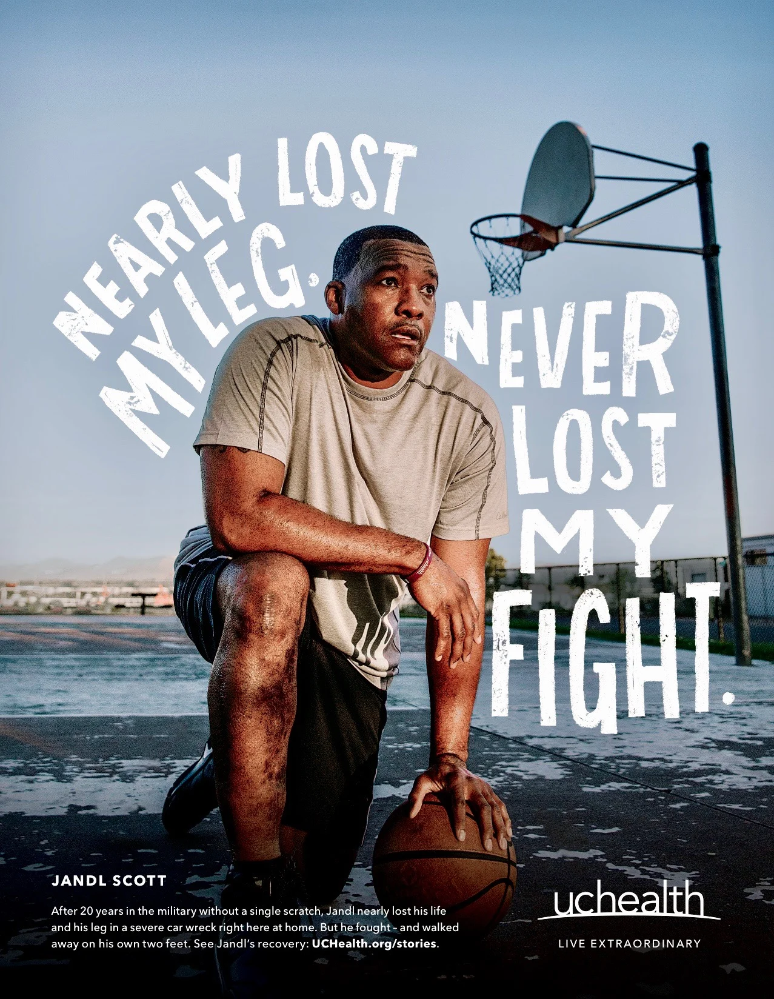
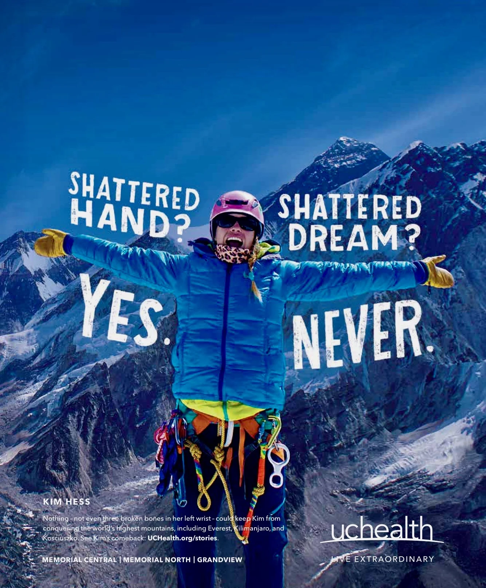
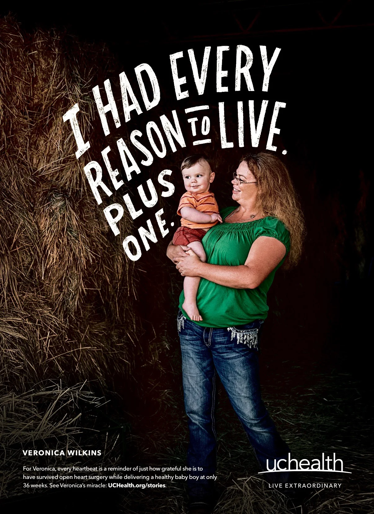

Film 01
02 · UCHealth
Live Extraordinary
Patient stories framed not around what happened to them, but around the life they refused to stop living.
ClientUCHealth
AgencyThe Richards Group
RoleConcept & Art Direction
DisciplinesBrand · Film · Print
The work
A human brand platform built around resilience: the injury, illness or diagnosis is part of the story, but it doesn’t get the final word.
The approach
The work pairs documentary-style portraiture with bold hand-rendered language, letting each person’s lived experience carry the message. The result is healthcare advertising that feels more like a declaration of identity than a clinical claim.
Film 02
Love Story
The same point of view extended into the print system, pairing real people with an unapologetically human visual voice.


